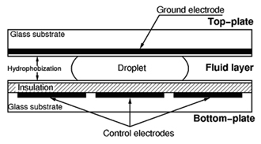

About Us
Digital microfluidics is an alternative paradigm for lab-on-a-chip systems based upon micromanipulation of discrete droplets. Microfluidic processing is performed on unit-sized packets of fluid which are transported, stored, mixed, reacted, or analyzed in a discrete manner using a standard set of basic instructions. In analogy to digital microelectronics, these basic instructions can be combined and reused within heirarchical design structures so that complex procedures (e.g. chemical synthesis or biological assays) can be built up step-by-step. And in contrast to continuous-flow microfluidics, digital microfluidics works much the same way as traditional bench-top protocols, only with much smaller volumes and much higher automation. Thus a wide range of established chemistries and protocols can be seamlessly transferred to a nanoliter droplet format.
Research in Dr. Richard Fair's laboratory at Duke University has focused on the use of electrowetting arrays to demonstrate the digital microfluidic concept. Electrowetting is essentially the phenomenon whereby an electric field can modify the wetting behavior of a droplet in contact with an insulated electrode. If an electric field is applied non-uniformly then a surface energy gradient is created which can be used to manipulate a droplet sandwiched between two plates. Electrowetting arrays allow large numbers of droplets to be independently manipulated under direct electrical control without the use of pumps, valves or even fixed channels.
Team
Current research group members include:
-
Richard B. Fair, Ph.D., Professor
-
Krishnendu Chakrabarty, Ph.D., Professor
-
Matthew W. Royal, Postdoctoral Associate
-
Andrew C. Madison, Graduate Student
-
Shuquan Huang, Graduate Student
-
Liji Chen, Graduate Student
-
Nan Jokerst, Ph.D., Professor
Droplet Transport


Droplet Dispensing


Droplet Mixing


Biological Arrays


{kind=link}
{kind=link}